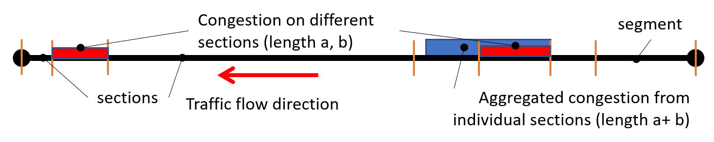
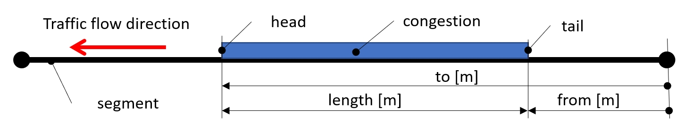

Concepts¶
This chapter describes the basic concepts used in this format. Including a description of the elements and their meaning. Detailed definitions are also given in the diagrams. In addition, this chapter provides short examples from actual XML documents. For more examples, see Appendix A: Message examples.
The described format allows the provision of information extracted from FCD. These are travel times, traffic flow speeds, congestion levels and estimates of the length and position of queues on a set of predefined routes, differentiated by vehicle type into information for trucks and for cars.
Parts of the XML document¶
The XML document builds on the following elements and parts:
DOC (document root)
INF (metadata)
FCD (container for state data on a segment)
SEGMENT (statuses per segment)
Unlike the original version of x-format:en-ndic_ddr-fcd-v1.0, this introduces structure to the description, renames some elements and attributes, and modifies their meaning.
The document root (DOC)¶
The DOC element represents a single publication (a single instance of the transmitted data).
The xmlns attribute refers to the schema version used.
The created attribute indicates the time at which the publication, as a whole, was created in a dateTime format.
1<?xml version="1.0" encoding="UTF-8"?>
2<DOC xmlns="x-format:cz-ndic_ddr-fcd-v2.0" created="2023-01-23T18:28:18+01:00">
Metadata (INF)¶
The INF element describes meta-information about the entire publication, specifically in the DAT/D2PLS sub-element it provides a reference to the DATEX II publication containing a description of the positions of the segments.
1 <INF>
2 <DAT>
3 <D2PLS uri="x-source:cz-ndic_d2-pls-fcd"/>
4 </DAT>
5 </INF>
Container for status data (FCD)¶
The individual segment statuses are placed in a common FCD parent element. This element contains information about those segments, out of the total number of segments, on which vehicle probes are or recently have been present.
The recent time is now set to T-5 minutes, T being the time of creation of the given publication.
Segments on which vehicle probes are not or have not been present in recent time are not listed.
Status of segment (SEGMENT)¶
The traffic situation on a segment is described by the sub-elements of the SEGMENT element:
element ALL contains values/statuses without differentiation of vehicle types, always present.
The elements CAR and TRUCK contain values/statuses for passenger vehicles and trucks respectively.
Elements SEGMENT are distinguished (by content only, not by attribute) into:
segments with mixed traffic flow, where it does not make sense to evaluate traffic parameters separately by vehicle type, i.e. vehicles moves in a mixed traffic or in single lane traffic. For these segments only the element ALL is given.
Segments with separate traffic flow where it makes sense to evaluate traffic parameters separately by vehicle type, i.e. vehicles move in separated traffic streams, in multiple lanes, so separated queues of vehicles by vehicle type may occur. For these segments, the element ALL and one or both of the elements CAR and TRUCK are provided depending on whether the vehicles of the type were present on the segment at the time of evaluation.
Segment identity and version and time¶
The identity of the state on a segment (SEGMENT) is uniquely determined by its position (given by the position identifier from D2PLS and its version) and the time of the calculation of the values.
10 <SEGMENT id="TS42739T17195" version="1" last_updated="2023-01-23T18:26:06+01:00">
The id attribute gives the identity of the segment, referring to the publication of predefined positions given in the metadata see Metadata (INF) to a record with the same id (and version).
Note
Position descriptions may evolve over time, so multiple entries with the same identifier may appear in a predefined locations publication, differing in their version.
The version attribute indicates the version of a given location description, and together with the value in id forms a unique reference to a set of predefined locations.
The last_updated attribute indicates the time for which the data is calculated, i.e. the last time values were calculated (and updated) for SEGMENT. The update takes place regularly at an interval of 1 minute. At that time, the routes of all vehicles with respect to travelled sections (parts of segments) of the monitored network are evaluated. The last update of the segment status occurs when the last vehicle leaves the segment.
Segments whose last update took place more than 4-5 minutes ago are not included in the overall overview (they are not up-to-date).
Values without vehicle type distinction (ALL)¶
The element ALL contains the calculated values on the segment for all vehicles without type distinction and an element describing the queue on the segment (CONGESTION) if the real queue is present.
11 <ALL count="1" speed="41" travel_time="30" delay="5" freeflow_speed="50" freeflow_time="25" reliability="0.500" traffic_level="2"/>
Note
The following attributes are always for all vehicles on a given section without type distinction.
The attribute count indicates the number of vehicles used for the calculation of the values (without type distinction).
The speed attribute gives the current speed of the traffic stream [km/h]. Calculated as the average speed of the vehicles that occur on the segment.
The travel_time attribute gives the current travel time [s]. The current travel time information is calculated from the “segment length/average speed on the segment”.
The delay attribute gives the delay [s]. The delay information is calculated from “free segment travel time - current travel time”.
The freeflow_speed attribute gives the free passage speed [km/h]. Calculated as historical values of the free-flow speed aggregated over all periods.
The freeflow_time attribute indicates the free passage time [s]. Calculated as “segment length”/freeflow_speed.
Note
The length of the entire segment can be calculated from the values of freeflow_speed and freeflow_time of the ALL element, which is always present, or found from publishing a set of predefined positions.
Attribute reliability indicates the reliability of the data, which characterizes the quality of the data sample [%]. It has values <0-1> where 1 means 100% reliable data. The value depends only on the number of vehicles on the segment, the base value is 50% for 1 vehicle on the segment, with more vehicles on the segment is the value asymptotically increasing to 100%. The reliability value can therefore always be calculated from knowing the number of vehicles per segment.
The traffic_level attribute indicates the level of traffic according to the custom in the country [-]. Here it is calculated as the % difference between the current traffic flow speed and the traffic flow speed on the free segment.
Degree |
Description |
% of difference |
|---|---|---|
1 |
single vehicle operation only, driving is smooth |
<85 %, 100 %) |
2 |
small groups of vehicles, smooth running, passing intersections without problems |
<75 %, 85 %) |
3 |
vehicle streams are forming, traffic is smooth but speed is below the maximum speed limit |
<50 %, 75 %) |
4 |
vehicle queues are forming, traffic is not flowing, average speed is significantly reduced, passing the intersections is impaired |
<20 %, 50 %) |
5 |
traffic collapse - vehicles are stationary on the roads or moving very slowly in convoys, average speed is very low |
<0 %, 20 %) |
Congestion on a segment (CONGESTION)¶
Segments are internally divided into smaller parts (sections of the Global Network, GN road network). The presence of congestion is evaluated with respect to GN sections as a decrease in the travelled speed of this section below 30 % of the free-flow speed.
Note
The distinction is made if congestion is generated by cars or trucks. The CONGESION element is therefore present in the element ALL with attributes computed from all vehicles on congested sections, and in the element TRUCK or CAR computed only from given type of vehicles.
The CONGESION element contains aggregated values from individual congested sections of the segment. If none of the sections of the segment were congested, the CONGESION element is not present. The element is present only once per segment, the values of its attributes are adapted to this (for more, see the description of the attributes and the image below).

Note
A congestion may be present on a segment even if the current speed on the whole segment is comparable to or higher than the free flow segment speed, for example, a congestion on a short section before an intersection.
16 <CONGESTION from="98" length="171"/>
The from attribute indicates the start of congestion [m] measured from the start of the segment in the direction of the traffic flow. In the case of multiple split congestions on a segment, for example, a congestion detected on GN sections 1 and 3, the from attribute only gives information about the 1st congestion

The length attribute gives the aggregated length of the traffic congestion for all sections of the segment [m]. i.e. the sum of the lengths of the congested Global Network sections (even non-contiguous) lying on the segment.
Values for passenger vehicles (CAR)¶
The CAR element contains calculated values, for the segment with separate traffic flow, for passenger cars only (vehicles of categories M1, M2, M3, N1). It contains the number of passenger vehicles (count), the speed (speed) and the free flow speed (freeflow_speed).
Element describing the passenger vehicles queue on the segment (CONGESTION) if the real queue is present.
44 <CAR count="3" speed="128" freeflow_speed="130"/>
Values for trucks (TRUCK)¶
The TRUCK element contains the calculated values, for the segment with separate traffic flow, for trucks only (vehicles of category N2, N3). It contains the number of trucks (count), the speed (speed) and the free flow speed (freeflow_speed).
Element describing the trucks queue on the segment (CONGESTION) if the real queue is present.
50 <TRUCK count="1" speed="90" freeflow_speed="80"/>
Location description¶
The publication of dynamic data described by this format, does not contain location descriptions, but refers to the publication of a set of predefined locations in DATEX II format. The publication with a set of predefined locations describes the locations of segments using ALERT-C, Open LR, Global Network sections and mileage methods.
For historical reasons, the location description is also included in the SEGMENT identifier, i.e. can be derived from the shape of its identifier. This interpretation is no longer maintained and may not always be correct. The concept is based on describing the location of a segment in relation to the Czech ALERT-C location table. The interpretation of the id of a SEGMENT is as follows: TS01409T04122
TS … the first 2 characters stand for traffic SEGMENT (traffic segment)
01409 … the next 5 characters are the numeric code of the so-called primary location from the ALERT-C table,
T … location code separator
04122 … the last 5 characters are the numeric code of the so-called secondary location from the ALERT-C table,
The primary location is the head of the problem, the point where, in the direction of the traffic flow, the driver leaves the location, usually the location of the accident site. The secondary location is the location where the driver enters the location, usually the tail of the queue (increasing upstream from the primary location).